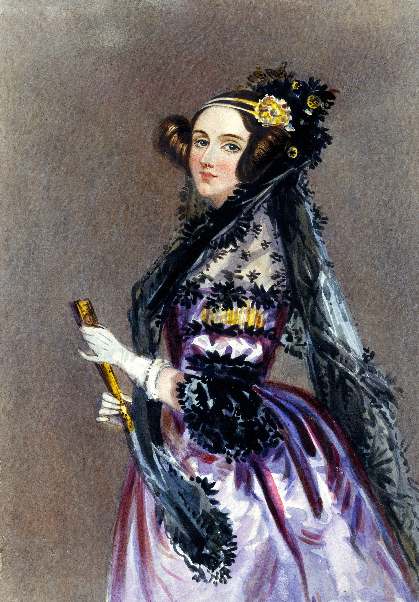

Project

Ada Lovelace was a countess, English mathematician and writer, most recognized for her work on Charles Babbage's early mechanical general-purpose computer, the Analytical Engine. She is regarded as the world's first computer programmer for her publication in 1843, suggesting the data input that would program the Analytic Machine to calculate Bernoulli numbers, now considered the first computer program. Babbage was so impressed, he dubbed her the "Enchantress of Numbers".
Beyond understanding the intricacies of Babbage's machine, Ada Lovelace was a visionary. She predicted what would happen 100 years in the future, that machines like the Analytical Engine could be used to compose music, create graphics, and would be vital for scientific progress. She understood that numbers could be used to represent so much more than just quantities. Lovelace became a brilliant mathematician, thanks in part to opportunities that were denied most women of the time. Born into aristocracy, the daughter of famous poet Lord Byron and Anne Isabella Milbanke, she was already destined for the history books. But her curiosity about how society relates to technology as a collaborative tool and contributions to the field of mathematics made her a pioneer.

The Analytical Engine was a proposed mechanical general-purpose computer designed by English mathematician and computer pioneer Charles Babbage.[2][3] It was first described in 1837 as the successor to Babbage's difference engine, which was a design for a simpler mechanical calculator.[4]
The Analytical Engine incorporated an arithmetic logic unit, control flow in the form of conditional branching and loops, and integrated memory, making it the first design for a general-purpose computer that could be described in modern terms as Turing-complete.[5][6] In other words, the structure of the Analytical Engine was essentially the same as that which has dominated computer design in the electronic era.[3] The Analytical Engine is one of the most successful achievements of Charles Babbage.
Babbage was never able to complete construction of any of his machines due to conflicts with his chief engineer and inadequate funding.[7][8] It was not until 1941 that Konrad Zuse built the first general-purpose computer, Z3, more than a century after Babbage had proposed the pioneering Analytical Engine in 1837.[3]